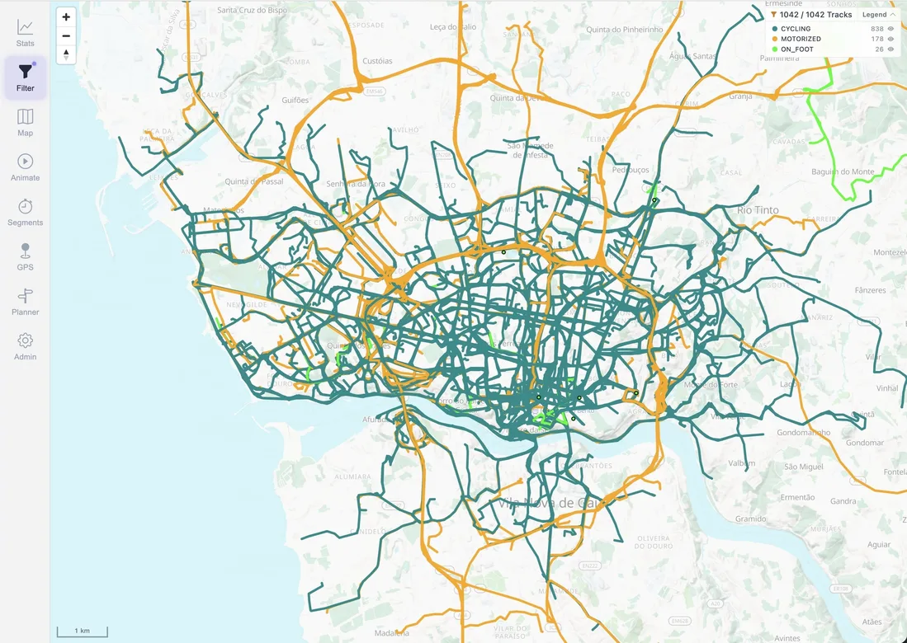
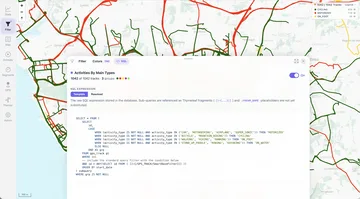
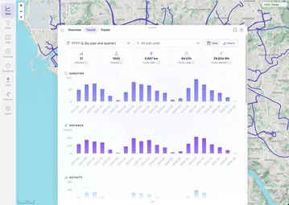

Start your installation
Follow the Docker guide and open MTL Explorer in your browser. Use your own installation for this; the public demo is for browsing.
GPS track map
Put thousands of your tracks on one map, on your own computer. Then narrow it down by activity, year, or your own filter.

Start with a few files and check the result before importing your whole history. Each activity keeps its own date and details.
Follow the Docker guide and open MTL Explorer in your browser. Use your own installation for this; the public demo is for browsing.
Download twelve synthetic GPX tracks, extract the ZIP, and copy the .gpx files into ./data/gpx/ beside your Compose file. Alternatively, open Settings → Import & sync and upload the extracted files.
Open Settings → Processing and wait until the import is done. Then go back to the map and choose a filter that includes all years.
Open the track browser, select a track named Synthetic loop, and look at its date, map, and graphs. Select 2025 in a year filter to focus on the four example activities from that year. See year filters in the public demo.
MTL Explorer accepts common GPS and activity formats, including GPX, FIT, TCX, KML/KMZ, IGC, NMEA, GeoJSON, and GDB. You can also download activities from Garmin Connect.
Your files, tracks, photos, and database stay on your own computer.
Files are imported in the background. Duplicates are detected and GPS errors cleaned up.
Select a track to inspect its date, distance, time, moving speed, elevation, estimated calories, mechanical work, and other available measurements.
Photos appear on the map next to the matching tracks, without uploading them anywhere.
Filters
Filters decide which tracks you see. Group them by activity or year, or write your own rules in SQL.
Use year filters and map colors to compare different periods.

Open map settings and select Points of interest. Choose among 21 categories, including peaks, viewpoints, drinking water, huts, food, and transport. Your choices are remembered in this browser.
More places appear as you zoom in; tap a marker for details. This layer requires available vector map data. To save your own named places and notes, use points of interest in a plan.
Open Track details → Overview → Energy to see the estimated active calories and work. Expand Energy details for total calories, how much of the track is covered, and Adjust body weight.
A body weight you set applies only to that track. Calories are shown per track; the statistics charts show work instead. See energy estimates for how to read them.

Statistics
Statistics use the tracks in your current filter. Compare distance, moving time, estimated work, and number of activities by year, quarter, month, or week.
The exploration score reports how much new territory an activity added to the existing archive.
On your phone you get the map, statistics, segments, and your current position. Tracks and maps you have already opened stay available offline.
Check the file, the import progress, and your filter before importing it again.
Check that the files are in the GPS folder MTL Explorer uses. On some network drives new files aren't noticed; use Settings → Maintenance → Rescan GPS.
Open Settings → Processing → Review GPS findings. Review shows what's wrong with each file and lets you download it to fix it in another tool. See the data and format limitations.
Check your filter: year, activity, and area. Find the activity in the track list and use it to jump to its location on the map.
When processing is done, use Settings → Maintenance → Reload tracks to load the latest data. A second copy of the same activity is marked as a duplicate and doesn't appear twice.